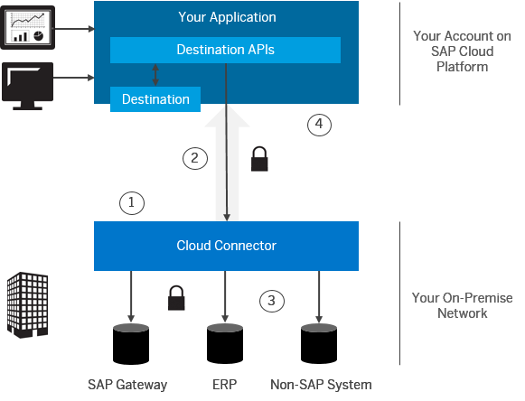

SAP Cloud Platform Cloud Connector
What's in this topic?
 (ABAP Connectivity Wiki, section
Documentation, chapter 1.4.1.3).
(ABAP Connectivity Wiki, section
Documentation, chapter 1.4.1.3).|
Section |
Description |
|---|---|
|
About SAP Cloud Platform cloud connector. |
|
|
How the Cloud connector helps you to connect your on-premise systems to SAP Cloud Platform. |
|
|
Learn more about the different connection setups you can choose. |
|
|
Primary steps you need to perform to connect the Cloud connector to your SAP Cloud Platform account. |
|
|
Stay up to date with the new Cloud connector features. |
The SAP Cloud Platform cloud connector (Cloud connector) serves as the link between on-demand applications in SAP Cloud Platform and existing on-premise systems. It combines an easy setup with a clear configuration of the systems that are exposed to SAP Cloud Platform. In addition, you can control the resources available for the cloud applications in those systems. Thus, you can benefit from your existing assets without exposing the whole internal landscape.
The Cloud connector runs as on-premise agent in a secured network and acts as a reverse invoke proxy between the on-premise network and SAP Cloud Platform. Due to its reverse invoke support, you don't need to configure the on-premise firewall to allow external access from the cloud to internal systems. The Cloud connector provides fine-grained control over:
- On-premise systems and resources that shall be accessible by cloud applications;
- Cloud applications that shall make use of the Cloud connector.
You can use the Cloud connector in business critical enterprise scenarios. The tool takes care to automatically re-establish broken connections, provides audit logging of the inbound traffic and configuration changes, and can be run in a high-availability setup.
In the Scenarios section below, follow the steps according to the protocol you need to use (HTTP or RFC).
Compared to the approach of opening ports in the firewall and using reverse proxies in the DMZ to establish access to on-premise systems, the Cloud connector has the following advantages:
- The firewall of the on-premise network does not have to open an inbound port to establish connectivity from SAP Cloud Platform to an on-premise system. In the case of allowed outbound connections, no modifications are required.
- The Cloud connector supports additional protocols, apart from HTTP. For example, the RFC protocol supports native access to ABAP systems by invoking function modules.
- The Cloud connector can be used to connect on-premise database, or BI tools to SAP HANA databases in the cloud. That means, it also supports the opposite connection direction (from the on-premise system to the cloud).
- The Cloud connector allows propagating identity of cloud users to on-premise systems in a secure way.
- The Cloud connector is easy to install and configure, that is, it comes with a low TCO and fits well to cloud scenarios. SAP provides standard support for it.
Connecting Cloud Applications to On-Premise Systems
|
 |
|
Connecting On-Premise Database Tools to SAP HANA Databases
The following steps are required to connect the Cloud connector to your SAP Cloud Platform account:
-
Install the Cloud connector:Installing the Cloud Connector.
- Perform the initial configuration for the Cloud connector:Initial Configuration.
- Register the Cloud connector for your SAP Cloud Platform account: Managing Accounts.
You can follow the release notes of SAP Cloud Platform to stay
informed about updates of the Cloud connector.